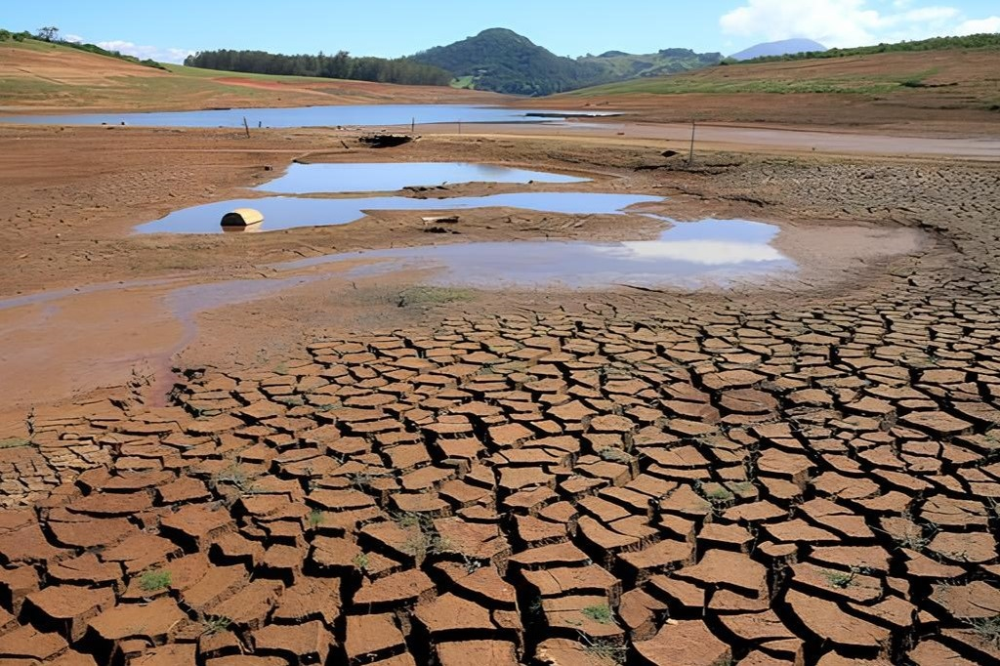
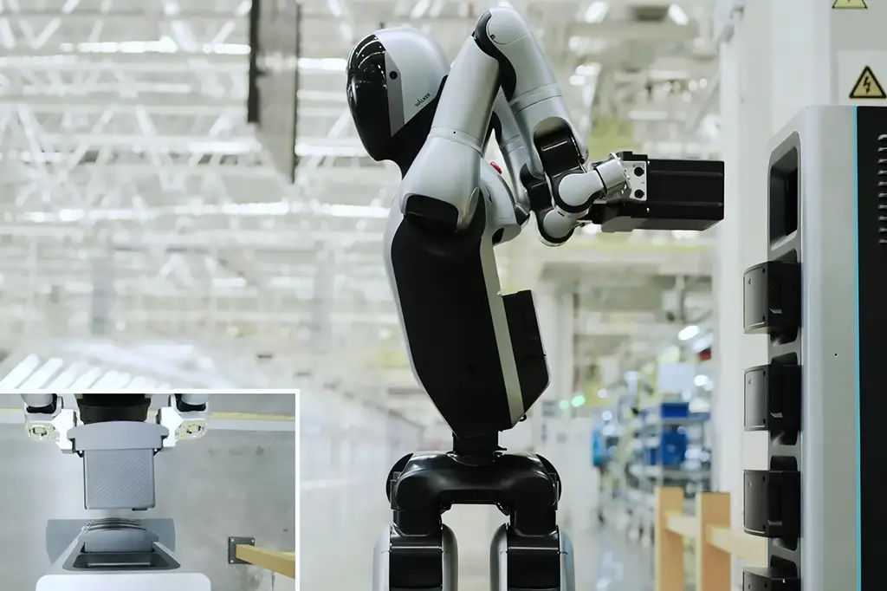

Avanços na Inteligência Artificial Prometem Revolucionar a Medicina
Novas pesquisas indicam que algoritmos de IA podem acelerar diagnósticos e personalizar
tratamentos, abrindo um novo capítulo na saúde.
Por Maria Souza | Tecnologia

Crise Hídrica Atinge Grandes Cidades e Exige Medidas Urgentes
A escassez de água se agrava em metrópoles, forçando governos a implementar racionamento e
buscar soluções de longo prazo.
Por Carlos Lima | Brasil

O Futuro do Trabalho: Como a Automação Redefine o Mercado
Empresas e trabalhadores se adaptam a um cenário onde a automação e a inteligência
artificial transformam as carreiras e as habilidades demandadas.
Por Ana Paula Costa | Economia
Festival de Cinema de Cannes Anuncia Vencedores e Surpresas
A 78ª edição do festival consagra novos talentos e filmes que prometem marcar a temporada de
premiações.
Por Ricardo Alves | Cultura